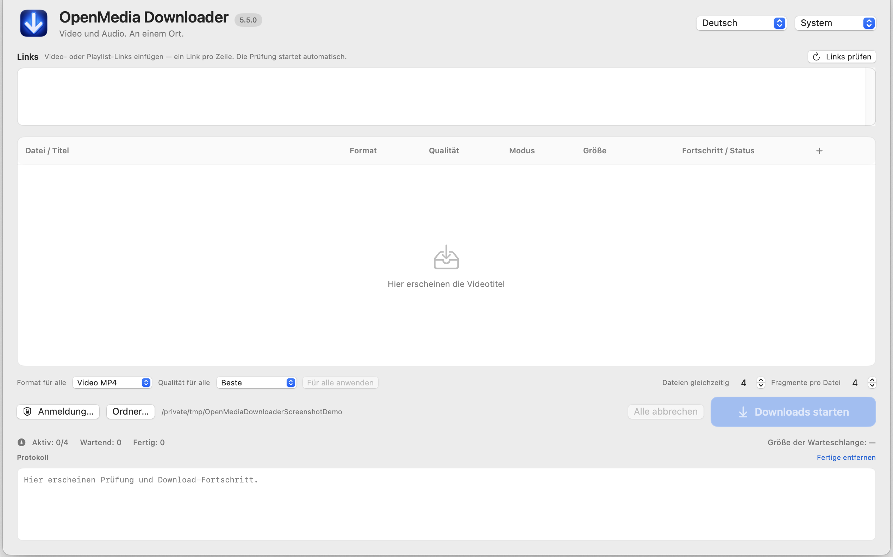
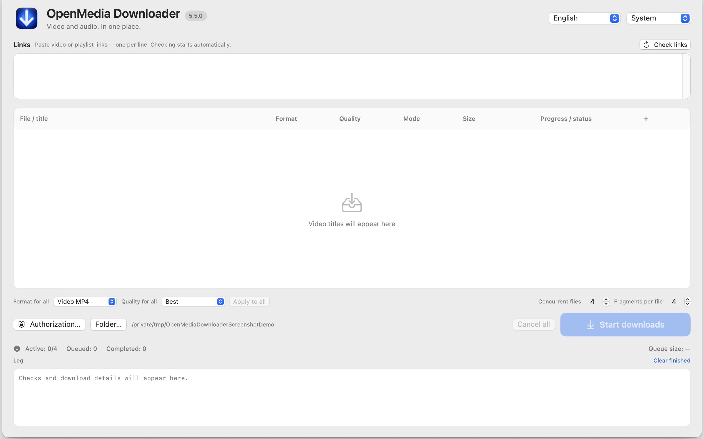

Deutsch
Handbuch
Prüft unterstützte YouTube- und Vimeo-Links, lässt Medien auswählen und lädt zulässige Inhalte herunter.
Deutsche Anleitung öffnen
Инструкции · помощь · загрузки
Позволяет просматривать поддерживаемые ссылки YouTube и Vimeo, выбирать материалы и скачивать или записывать доступные потоки.
Локализованные инструкции, демонстрационные изображения и ограничения выпуска.

Prüft unterstützte YouTube- und Vimeo-Links, lässt Medien auswählen und lädt zulässige Inhalte herunter.
Deutsche Anleitung öffnen
Inspects supported YouTube and Vimeo links, lets you select media, and downloads permitted content.
Open the English guideПроверяет поддерживаемые ссылки YouTube и Vimeo, позволяет выбрать материалы и загрузить разрешённый контент.
Открыть инструкцию